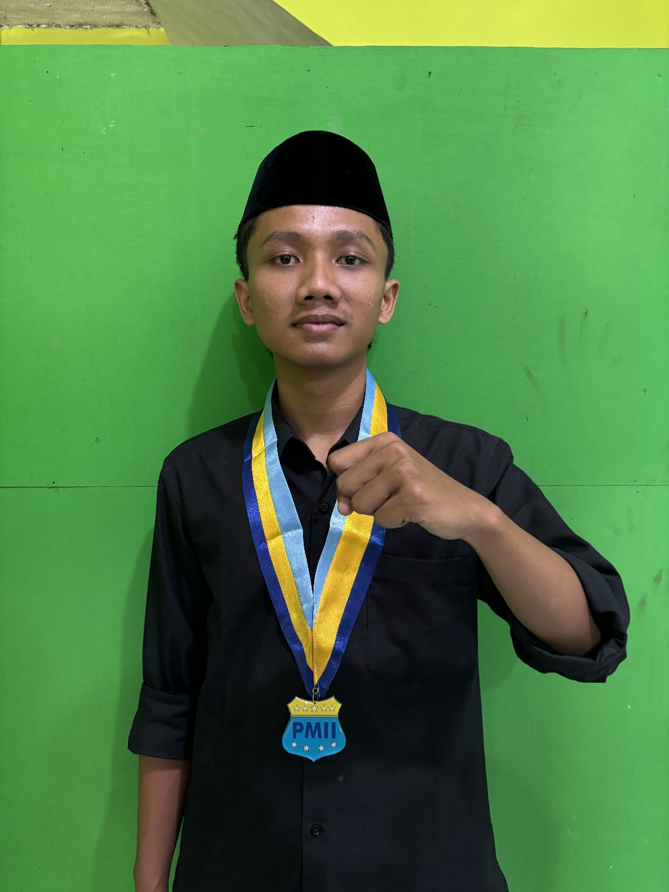

Struktur Organisasi PMII RAKHUL
Susunan Pengurus Rayon Khulafaur Rasyidin

Ketua Rayon
Mas Ulil Albab
Sekretaris
Nama Sekretaris
Bendahara
Nama BendaharaBidang-Bidang
Bidang Kaderisasi
Nama Koordinator
Bidang Intelektual
Nama Koordinator
Bidang Sosial & Dakwah
Nama Koordinator
Bidang Media & Informasi
Nama Koordinator